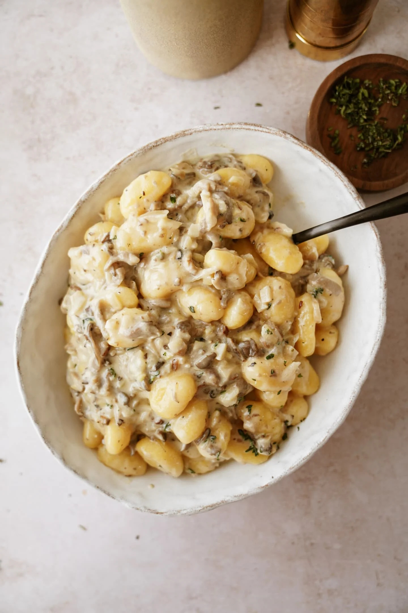

приготовление:
-
Приготовление ньокки: Вскипятить подсоленную воду и добавить 500 г ньокки. Варить до всплытия. Слить воду, но сохранить ¼ стакана жидкости для соуса. Готовые ньокки промыть холодной водой, полить 1 ч. л. оливкового масла и аккуратно перемешать, чтобы не слиплись. Отложить до подачи.
-
Приготовление соуса: В широкой сковороде растопить 4 ст. л. сливочного масла. Добавить мелко нарезанный 1 небольшой лук и 3 измельчённых зубчика чеснока, обжарить на среднем огне 3–4 минуты до мягкости. Добавить 200 г вешенок (или других грибов), готовить 5–6 минут, пока они подрумянятся и испарится лишняя влага.
-
Влить ¼ стакана вина/комбучи, выпарить жидкость почти полностью за 2 минуты. Добавить ½ стакана сливок (15–20%), 1 ст. л. свежего тимьяна (или щепотку сушёного) и ¼ стакана воды от варки ньокки. Довести до лёгкого кипения и варить 3–4 минуты.
-
Вмешать ½ стакана тёртого пармезана — он загустит соус. Посолить трюфельной солью (щепотку или две) и добавить чёрного перца по вкусу. Снять с огня. (Соус можно остудить и хранить в холодильнике до 2 суток. Перед подачей разогреть на слабом огне, добавив немного воды или сливок, если стал густым)
-
Сборка блюда: В разогретый соус добавить подготовленные ньокки и прогреть вместе 2–3 минуты. Проверить вкус, при желании добавить ещё немного трюфельного масла или тёртого пармезана сверху. Подавать горячими, в конце полив 1 ч.л. трюфельного масла.